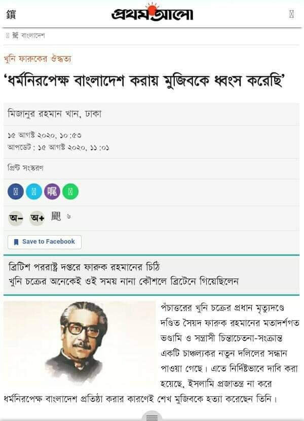

কওমি অঙ্গনে মুজিব প্রেমের উথলে ওঠা ঢেউ সম্প্রতি বেশ লক্ষণীয়। তারা কি একবার সঠিক…
১৬ আগস্ট, ২০২০
কওমি অঙ্গনে মুজিব প্রেমের উথলে ওঠা ঢেউ সম্প্রতি বেশ লক্ষণীয়। তারা কি একবার সঠিক ইতিহাস জানার চেষ্টা করবে?
ধর্মীয় অপরাধের দায়ে 'বঙ্গবন্ধু'কে হত্যা?!
.
‘সেক্যুলার (ধর্মনিরপেক্ষ) বাংলাদেশ করায় মুজিবকে ধ্বংস করেছি’৷
—কর্নেল ফারুক
[সূত্র: প্রথমআলো, ১৫ আগস্ট, ২০২০]
.
কর্নেল সৈয়দ ফারুক রহমানের দাবি, ইসলামি প্রজাতন্ত্র না করে ধর্মনিরপেক্ষ বাংলাদেশ প্রতিষ্ঠা করার কারণেই শেখ মুজিবকে হত্যা করেছেন তিনি।
.
ব্রিটেনের জাতীয় মহাফেজখানা থেকে উদ্ধার করা একটি গোপন নথিতে দেখা যাচ্ছে, সৈয়দ ফারুক রহমান ১৯৭৬ সালে লিখেছেন, একাত্তরের মূল চেতনা ছিল ইসলামিক রিপাবলিক অব বাংলাদেশ প্রতিষ্ঠা করা। শেখ মুজিবকে মানুষ সে কারণেই নেতার আসনে বসিয়েছিলেন। কিন্তু যুদ্ধ শেষে তিনি বাংলাদেশের মুসলমানদের সঙ্গে বিশ্বাসঘাতকতা করেন। তিনি ধর্মনিরপেক্ষ বাংলাদেশ প্রতিষ্ঠা করেন। আর সে কারণেই তিনি ‘আল্লাহর প্রেরিত বান্দা’ হিসেবে শেখ মুজিবুর রহমানকে হত্যা করেন। এর মূল দায় তাঁর, তিনিই এ বিষয়ে আল্লাহর কাছে জবাবদিহি করবেন।
.
ইংরেজিতে কর্নেল ফারুকের নিজের হাতে লেখা চিঠিটি এ–ফোর আকৃতির ৭ পৃষ্ঠার। তিনি নিচে সই করেছেন ২৪ (অস্পষ্ট) জুন, ১৯৭৬। পদবি লিখেছেন— লে. কর্নেল, দ্য বেঙ্গল ল্যান্সারস। এ থেকে বোঝা যায়, তিনি সেনাবাহিনীর একজন কর্মরত অফিসার হিসেবেই ব্রিটিশদের কাছে ওই চিঠি পৌঁছে দিয়ে থাকতে পারেন। অবশ্য ব্রিটিশরাও সেটি কোনো সূত্র থেকে সংগ্রহ করে থাকতে পারেন। ঠিক কোন সূত্রে কী কারণে চিঠিটি ব্রিটিশ পররাষ্ট্র মন্ত্রণালয় সংগ্রহ করেছিল, তা জানা যায়নি। তবে এর অনুলিপি ব্রিটিশ স্বরাষ্ট্র মন্ত্রণালয়ের দুজন কর্মকর্তার (এম ভি শ এবং মিসেস মার্শাল) কাছে পাঠিয়েছিল ব্রিটিশ পররাষ্ট্র দপ্তর।
.
ফারুক রহমানের ওই চিঠির শিরোনাম হলো, ‘দ্য ইসলামিক সোশ্যালিস্ট রেভল্যুশন ইন বাংলাদেশ’। ফারুক তাঁর দীর্ঘ চিঠিতে মুক্তিযুদ্ধ কথাটি একেবারেই উল্লেখ করেননি।
ফারুক রহমান লিখেছেন, একাত্তরে বাংলাদেশের মানুষ বিশ্বাস করেছিলেন যে শেখ মুজিব তাঁদের অভিপ্রায় পূরণের জন্য সঠিক নেতা। তাঁকে সব ক্ষমতাই দেওয়া হয়েছিল। কিন্তু তিনি তাঁর ধর্ম ইসলামের সঙ্গে বিশ্বাসঘাতকতা করেন। অথচ এটাই ছিল বিপ্লব ও মানুষের ধর্মের মূল আদর্শগত প্রতিপাদ্য। এই বিশ্বাসঘাতকতার কারণেই তাঁকে ধ্বংস করেছি। কেউ তাঁকে বাঁচাতে পারেনি।’
চিঠির একটি স্থানে কর্নেল ফারুক লেখেন, ‘পঁচাত্তরের ১৫ আগস্ট ইসলামি বিপ্লবের প্রয়োজনে আমি সর্বশক্তিমান আল্লাহর নগণ্য হাতিয়ার (হাম্বল ইনস্ট্রুমেন্ট) হিসেবে শেখ মুজিবকে ধ্বংস করি। আর সেই মুহূর্তেই স্বয়ংক্রিয়ভাবে বাংলাদেশে প্রকৃত পরিবর্তন তথা ইসলাম বাস্তবায়নের দায়িত্বভার গ্রহণ করি।’
.
মেজর শরিফুল হক ডালিম প্রথম ও শেষবারের মতো ১৫ আগস্টে বাংলাদেশ বেতারে বাংলাদেশকে ‘ইসলামি প্রজাতন্ত্র’ হিসেবে ঘোষণা করেছিলেন।
.
জিয়াউর রহমান সম্পর্কে—
.
জিয়াউর রহমান প্রসঙ্গে সৈয়দ ফারুক রহমান বলেন, ‘জনগণের আকাঙ্ক্ষা বাস্তবায়নের সুযোগ তাঁকে দেওয়া হয়েছিল। কিন্তু তিনি ব্যর্থ হয়েছিলেন। কারণ, ইসলামি বিপ্লবের আদর্শ তিনি বুঝতে পারেননি বা চাননি। তিনি বিভ্রান্ত ছিলেন। তিনি তাঁর উচ্চাভিলাষী এবং অসৎ স্টাফ অফিসারদের পরামর্শের ওপর নির্ভরশীল ছিলেন।’
ফারুক এরপর লেখেন, ‘১৯৭৫ সালের আগস্টে আমি জিয়াউর রহমানকে বাংলাদেশ সেনাবাহিনীর প্রধান পদে বসিয়েছিলাম। কারণ, ভেবেছিলাম তিনি জ্যেষ্ঠ কর্মকর্তাদের মধ্যে ন্যূনতম দুর্নীতিগ্রস্ত এবং প্রতীয়মান হয়েছিল যে তিনি বিপ্লবের আদর্শ অনুমোদন করেছিলেন। পঁচাত্তরের ৩ নভেম্বরের ষড়যন্ত্রকারীদের সঙ্গে হাত মেলানোর আগ পর্যন্ত আমি তাঁর সঠিক চরিত্র বুঝতে পারিনি। ৭ নভেম্বরে বিপ্লবী সৈনিক ও জনতা আমার দেওয়া মনোনায়ন অনুমোদন করেছিলেন। কারণ, তাঁরা আশা করেছিলেন, জিয়া বিপ্লবের আদর্শ বাস্তবায়ন করবেন। আমি তখন নীরব ছিলাম। কারণ, আমি মনে করেছি, কারও বিশ্বাসঘাতকতা ব্যক্তিগত বিষয়। কিন্তু ১৯৭৬ সালের এপ্রিল/মে মাসে বাংলাদেশ সফরের পরে আমি সত্যটা বুঝতে পারি। সত্যটা হলো, জিয়া দেশের অন্যান্য নেতাদের মতোই ইসলামি বিপ্লবের আদর্শের সঙ্গে বিশ্বাসঘাতকতা করেছেন।’
.
খোন্দকার মোশতাক সম্পর্কে—
খোন্দকার মোশতাক আহমেদ প্রসঙ্গে ফারুক লিখেছেন, ‘আমি মোশতাক আহমেদের দ্বারা প্রতিশ্রুতি পেয়েছিলাম যে যত তাড়াতাড়ি সম্ভব বাংলাদেশে তিনি ইসলামি আদর্শ প্রতিষ্ঠা করবেন। কিন্তু তিনি সেটা না করে স্থগিত করে রাখলেন। তাঁকে অপসারণ না করে আমার পক্ষে তাতে কোনো হস্তক্ষেপ করা সম্ভব ছিল না। আমি তখন সেই পর্যায়ে সেটা করিনি। কারণ, আমি তাঁকে সময় দিতে চেয়েছিলাম। আমি ক্ষমতা নিতে অনাগ্রহী ছিলাম।’
.
কর্নেল ফারুক তাঁর চিঠির উপসংহারে বলেন, ‘সর্বশক্তিমান আল্লাহর একজন খাদেম (সার্ভেন্ট) হিসেবে বিশ্বস্ততার সঙ্গে কোরআনে বর্ণিত বিপ্লবী নীতিসমূহ কার্যকর করাই হবে আমার মৌলনীতি। ক্ষমতা ও কর্তৃত্ব আল্লাহর কাছ থেকে আসে। আমি আরও বিশ্বাস করি, বাংলাদেশ সর্বশক্তিমান আল্লাহর হেফাজতে আছে এবং মুসলিম হিসেবে নিজেদের প্রমাণ করার আরেকটি সুযোগ আমরা পেয়েছি।’
ইসলামিক সোশ্যালিস্ট রেভল্যুশনের জন্য ফারুক চার লক্ষ্য উল্লেখ করেছিলেন: ক. ইসলামকে রাষ্ট্রধর্ম ঘোষণা করা। পবিত্র কোরআনের নীতি অনুযায়ী ইসলামি আইন ও সামাজিক কাঠামো তৈরি করা। খ. বাংলাদেশে একটি বিপ্লবী সরকার প্রতিষ্ঠা করা। গ. পবিত্র কোরআনের ভিত্তিতে জনগণের প্রত্যক্ষ শাসন কায়েম করা। ঘ. বিশেষ করে ইসলামি দেশগুলোর সঙ্গে থেকে ব্রাদারহুড অব ইসলাম কায়েম করা।
.
সূত্র : দৈনিক প্রথমআলো (১৫ আগস্ট, ২০২০ খ্রি.)
